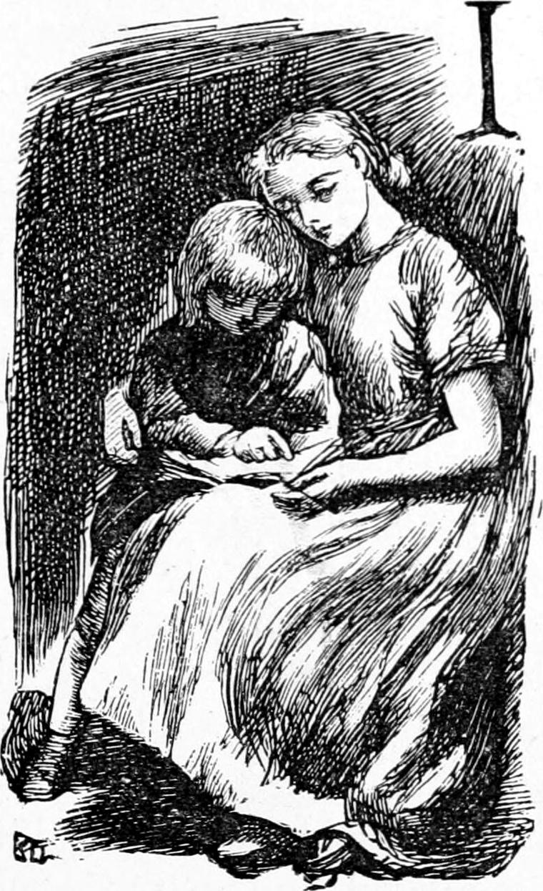
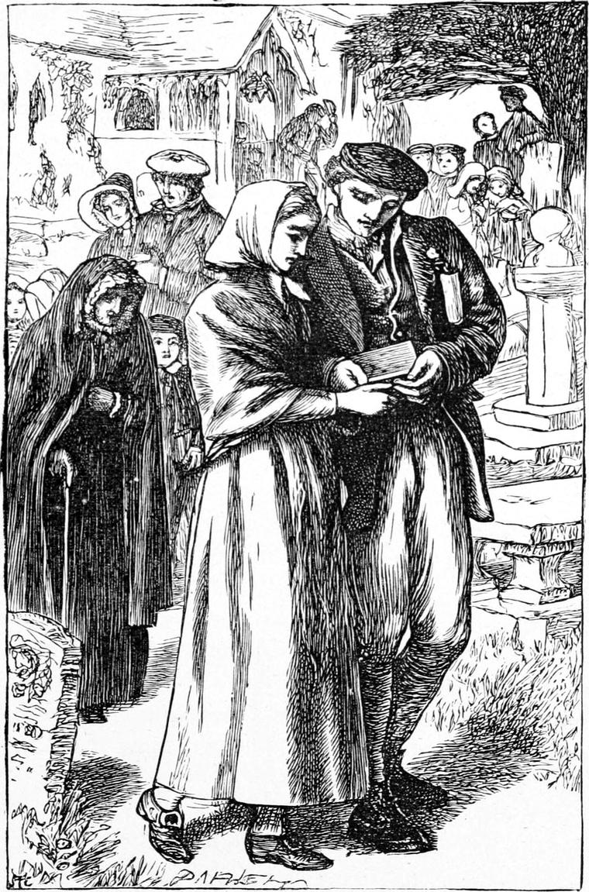

I now saw much less of Elsie; but I went with Turkey, as often as I could, to visit her at her father’s cottage. The evenings we spent there are amongst the happiest hours in my memory. One evening in particular appears to stand out as a type of the whole. I remember every point in the visit. I think it must have been almost the last. We set out as the sun was going down on an evening in the end of April, when the nightly frosts had not yet vanished. The hail was dancing about us as we started; the sun was disappearing in a bank of tawny orange cloud; the night would be cold and dark and stormy; but we cared nothing for that: a conflict with the elements always added to the pleasure of any undertaking then. It was in the midst of another shower of hail, driven on the blasts of a keen wind, that we arrived at the little cottage. It had been built by Duff himself to receive his bride, and although since enlarged, was still a very little house. It had a foundation of stone, but the walls were of turf. He had lined it with boards, however, and so made it warmer and more comfortable than most of the labourers’ dwellings. When we entered, a glowing fire of peat was on the hearth, and the pot with the supper hung over it. Mrs. Duff was spinning, and Elsie, by the light of a little oil lamp suspended against the wall, was teaching her youngest brother to read. Whatever she did, she always seemed in my eyes to do it better than anyone else; and to see her under the lamp, with one arm round the little fellow who stood leaning against her, while the other hand pointed with a knitting-needle to the letters of the spelling-book which lay on her knee, was to see a lovely picture. The mother did not rise from her spinning, but spoke a kindly welcome, while Elsie got up, and without approaching us, or saying more than a word or two, set chairs for us by the fire, and took the little fellow away to put him to bed.
“It’s a cold night,” said Mrs. Duff. “The wind seems to blow through me as I sit at my wheel. I wish my husband would come home.”
“He’ll be suppering his horses,” said Turkey. “I’ll just run across and give him a hand, and that’ll bring him in the sooner.”
“Thank you, Turkey,” said Mrs. Duff as he vanished.
“He’s a fine lad,” she remarked, much in the same phrase my father used when speaking of him.
“There’s nobody like Turkey,” I said.
“Indeed, I think you’re right there, Ranald. A better-behaved lad doesn’t step. He’ll do something to distinguish himself some day. I shouldn’t wonder if he went to college, and wagged his head in a pulpit yet.”
The idea of Turkey wagging his head in a pulpit made me laugh.
“Wait till you see,” resumed Mrs. Duff, somewhat offended at my reception of her prophecy. “Folk will hear of him yet.”
“I didn’t mean he couldn’t be a minister, Mrs. Duff. But I don’t think he will take to that.”
Here Elsie came back, and lifting the lid of the pot, examined the state of its contents. I got hold of her hand, but for the first time she withdrew it. I did not feel hurt, for she did it very gently. Then she began to set the white deal table in the middle of the floor, and by the time she had put the plates and spoons upon it, the water in the pot was boiling, and she began to make the porridge, at which she was judged to be first-rate—in my mind, equal to our Kirsty. By the time it was ready, her father and Turkey came in. James Duff said grace, and we sat down to our supper. The wind was blowing hard outside, and every now and then the hail came in deafening rattles against the little windows, and, descending the wide chimney, danced on the floor about the hearth; but not a thought of the long, stormy way between us and home interfered with the enjoyment of the hour.
After supper, which was enlivened by simple chat about the crops and the doings on the farm, James turned to me, and said:
“Haven’t you got a song or a ballad to give us, Ranald? I know you’re always getting hold of such things.”
I had expected this; for, every time I went, I tried to have something to repeat to them. As I could not sing, this was the nearest way in which I might contribute to the evening’s entertainment. Elsie was very fond of ballads, and I could hardly please her better than by bringing a new one with me. But in default of that, an old one or a story would be welcomed. My reader must remember that there were very few books to be had then in that part of the country, and therefore any mode of literature was precious. The schoolmaster was the chief source from which I derived my provision of this sort. On the present occasion, I was prepared with a ballad of his. I remember every word of it now, and will give it to my readers, reminding them once more how easy it is to skip it, if they do not care for that kind of thing.
Ken ye what is care?
Had ye ever a thought, lassie,
Made yer hertie sair?”
Into Jeannie’s face;
Seekin’ in the garden hedge
For an open place.
“Nought o’ care ken I;
For they say the carlin’
Is better passit by.”
As o’ foot and ban’!
Lang be yours sic answer
To ony spierin’ man.”
Though yer words are few;
Ye wad hae me aye as careless,
Till I care for you.”
Wi’ yer lauchin’ ee;
For ye hae nae notion
What gaes on in me.”
O’ what’s in yonder cairn;
I’m no sae pryin’, Johnnie,
It’s none o’ my concern.”
Ye canna help, my doo—
Ye canna help me carin’
Wi’ a’ my hert for you.”
Listed for the war;
In a year cam’ limpin’
Hame wi’ mony a scar.
Wan and worn wi’ care?
Could it be his Jeannie
Aged and alter’d sair?
Reid wi’ sorrow’s dew:
Could she in a twalmonth
Be wife and widow too?
Ken ‘t him whan he spak’:
“I thocht that ye was deid, Johnnie:
Is’t yersel’ come back?”
Wife or widow or baith?
To see ye lost as I am,
I wad be verra laith,”
That wife was never nane;
But gin ye will hae me,
Noo I will be ane.”
Forgetful o’ war’s harms;
But couldna stan’ withoot it,
And fell in Jeannie’s arms.
“That’s not a bad ballad,” said James Duff. “Have you a tune it would go to, Elsie?”
Elsie thought a little, and asked me to repeat the first verse. Then she sung it out clear and fair to a tune I had never heard before.
“That will do splendidly, Elsie,” I said. “I will write it out for you, and then you will be able to sing it all the next time I come.”
She made me no answer. She and Turkey were looking at each other, and did not hear me. James Duff began to talk to me. Elsie was putting away the supper-things. In a few minutes I missed her and Turkey, and they were absent for some time. They did not return together, but first Turkey, and Elsie some minutes after. As the night was now getting quite stormy, James Duff counselled our return, and we obeyed. But little either Turkey or I cared for wind or hail.
I saw Elsie at church most Sundays; but she was far too attentive and modest ever to give me even a look. Sometimes I had a word with her when we came out, but my father expected us to walk home with him; and I generally saw Turkey walk away with her.
